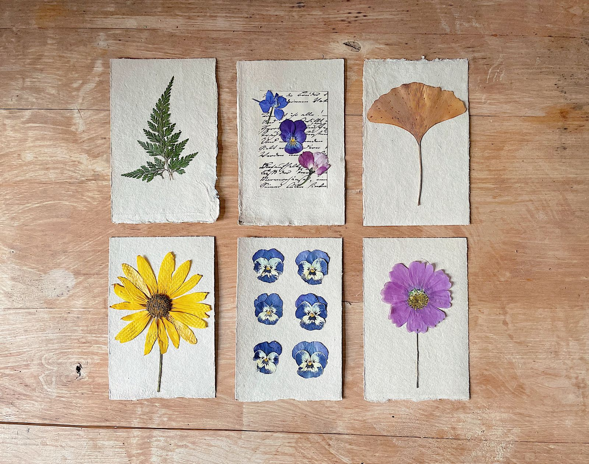

Sheet 03 · The Botanist
Trained from the sheet backwards: label first, plant second.
Dr June Ashworth
I came to ethnobotany from the wrong end, which turned out to be the right one. My first degree was in botany, and my first job was six years in a university herbarium — mounting, labelling, repairing other centuries' fieldwork. A herbarium teaches you a discipline no field school can: a specimen without a trustworthy label is just a dead plant, and a label is a promise somebody made about where, when and by whom.
Field training followed — ethnographic methods, interview craft, the statistics of agreement that The Record's calculator is built on — and then the slow realisation that the weak point of most documentation projects is not botany at all. It is the paperwork of permission. Records were being made faster than consent was being understood, and archives were ending up everywhere except with the people in them. Root Remedy exists to run that order backwards: consent first, the community's archive first, the institution's copy licensed and last.
I work in Portuguese and English. Programmes conducted in any other language are staffed for it — liaison and transcription are done by paid colleagues from the community, working in the record's own language. I do not pretend to a fluency I do not have, and I do not let a budget pretend it either.
Fourteen programmes in, the practice's habits have hardened into rules, and the rules are printed on this site rather than kept in a drawer: the fee shape on The Record, the pauses in the Programme Log, and the ethics below.

How a programme runs, stage by stage
Six stages. The order is the ethics: nothing is recorded before stage one is complete, and nothing is published — anywhere, by anyone — before stage five.
- Stage 1
Consent first — before any recorder is switched on
The programme is explained to the community's own organisation first, then to each holder individually: what will be recorded, who will hold it, what it will never be used for. Consent is written and recorded verbally, per person and per session, and it is revocable at any time — including after the archive is delivered, in which case the record is amended or withdrawn and every copy-holder is notified.
- Stage 2
Recording practice
Sessions happen where the knowledge lives — gardens, kitchens, market stalls, the walk to the gathering ground. Use-reports are logged by category of use, in the holder's words first and terminology second. Holders are paid for session days at the liaison rate structure; knowledge is work, and the budget treats it as work.
- Stage 3
Voucher specimens
For each plant in the record, a specimen is collected with the holder's permission — never from a population that cannot spare it, and never a protected species. Specimens are pressed in the field, numbered, and deposited in the partner herbarium with the programme's reference on the label. A plant name without a voucher behind it is an opinion, and the record marks it as one.
- Stage 4
Transcription & translation
Recordings are transcribed by paid transcribers from the community, in the language of the recording. Translation, where the commissioning institution needs it, is a second document — never a replacement. Every holder reviews their own transcript and may correct, annotate or strike any part of it before filing.
- Stage 5
Return of the materials
The complete archive — print, audio, digital — is delivered to the community first and receipted. Only then does the commissioning institution receive its copy, under licence: the licence names the permitted uses, bars commercial use, and lapses if the terms are broken. The practice retains working papers only, and only as the agreement specifies.
- Stage 6
Withdrawal & aftercare
Consent is not a signature harvested once; it is a standing arrangement. Holders and their organisation can withdraw material, correct the record, or add to it — most archives here are added to within a year, usually by the community's own trained recorders. Withdrawn material is removed from every copy the practice controls, and copy-holders are instructed in writing to do the same.
Four commitments, kept in print
These are terms of engagement, not values on a wall. Each one has cost this practice money at least once — the paused season in the Programme Log is commitment one, invoiced.
Prior informed consent
Nothing is recorded before consent is given — freely, in advance, and with the uses and limits explained in the holder's own language. Consent is specific: agreeing to be recorded for a community archive is not agreeing to publication, to research licensing, or to anything else. Each use is consented separately, and a refusal ends the conversation, not the relationship.
Benefit-sharing & ownership
The record belongs to the community whose knowledge it is. Holders and liaison colleagues are paid at professional rates; the archive is returned complete and first; institutional copies are licensed, never sold on, and commercial use is barred by the standard terms. If a programme ever generates income beyond its fees, the agreement — written before fieldwork — already says how it is shared.
The sensitive-locality policy
Exact locations of rare, protected or commercially collected species are never published — not on this site, not in the institutional copy, not in any paper that draws on the record. Coordinates are generalised before a record leaves the archive, and original labels stay in closed files, where access belongs to the community and the holding herbarium to grant.
The efficacy line
Documentation records what a community knows and uses. It does not validate it. Nothing in any record from this practice should be read as evidence that a plant treats, cures or prevents anything — the consensus factor measures agreement between people, and agreement is not pharmacology. This practice sells no remedies, supplies no plant material, and refers medical questions to medical professionals, where they belong.
“A recording made without consent is not data.
It is theft with good filing.”
How hiring this practice works
- First conversation
- Free, unhurried, and without obligation on either side. If the community whose knowledge is involved has not yet been part of the conversation, that is the first thing we fix — no programme is designed about a community before it is designed with one.
- Agreement before fieldwork
- A written agreement covering consent procedure, ownership, licensing, delivery order and withdrawal rights is signed before any recording. Programmes do not start on a purchase order and a handshake.
- Deposit & billing
- Thirty per cent on signing; fieldwork and liaison billed as worked, monthly; the archive line falls due on delivery of the community copy — not the institutional one. If consent discussions pause a programme, liaison days are billed and fieldwork days are not, as Plate II of the Programme Log shows.
- Ownership
- The community owns the record. The commissioning institution receives a licensed copy for the uses named in the agreement. The practice keeps working papers only, as agreed, and sells nothing — no data, no specimens, no remedies.
- Stopping a programme
- The community may stop a programme at any stage, for any reason, and material recorded to that point is handled exactly as the agreement's withdrawal terms say. Institutions may also withdraw; billing runs to the stop date and no further.
Method first, then the fieldwork.
If the order of these stages makes sense to you, the rest of the conversation is easy.